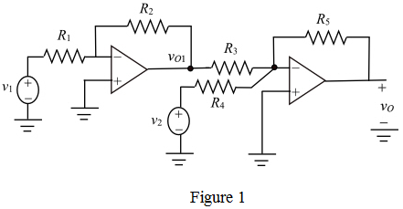
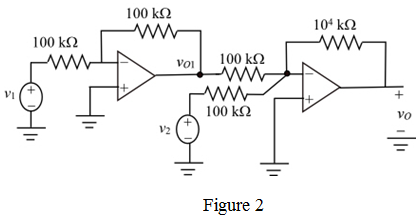

Step 1:
Draw the circuit of the difference amplifier using two op-amps.

Step 2:
Apply Kirchhoff’s current law at inverting terminal of the op-amp 1.
The output of the first op-amp circuit is,
Step 3:
The second amplifier is a summing amplifier, which provides the sum of the two voltages, the output of first op-amp circuit,  and the non-inverting input voltage,
and the non-inverting input voltage,
Apply Kirchhoff’s current law at inverting terminal of the op-amp 2.
The output of the summing amplifier is,
Substitute for  .
.
The required gain of the difference between the two voltages is 100.
Thus,
…… (1)
Step 4:
Select the resistance value,  .
.
Calculate the value of resistance  .
.
Select the resistance values,
Thus, the ratio, from equation (1) is,
Substitute for  in the equation.
in the equation.
Step 5:
The difference between the two input voltages is,
For a gain of 100, the output voltage is,
The magnitude of the output voltage is  .
.
Hence, the output voltage swing is within the limit .
Step 6:
Draw the designed op-amp circuit that determines the difference between the two signals,

and

.

Thus, the required op-amp circuit is designed.